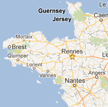
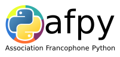
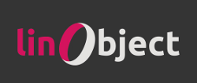

DjangoBreizhRennes, 17 novembre 2012
La conf django qui sent bon l'iode et la galette saucisse !
DjangoBreizh, c'est tout l'esprit des rencontres djangocong, avec le climat sain et vivifiant de la Bretagne à la Toussaint !
Un événement collaboratif
DjangoBreizh est un événement collaboratif orienté vers les retours d'expérience, avec des conférences de 15 minutes le matin, un atelier débutant et des barcamps l'après-midi.
Nous parlerons de Django et de développement web, et de python bien sûr !
L'inscription n'est pas obligatoire
pour la journée (conférences, barcamps et ateliers débutants),
qui est gratuite. N'hésitez pas à vous signaler sur le lanyrd de Django Breizh !
Le soir sera l'occasion d'un Apero Communautaire dans un
bar proche des conférences.
Le programme
L'idée est de reprendre les points forts du programme des djangocongs, mais en l'adaptant pour une seule journée.
Si vous êtes intéressés par l'atelier découverte et installation pour débutant, n'hésitez pas à venir avec votre laptop.
- 9h00 : petit déjeuner et ouverture
- 9h30 : conférences
- 12h30 : 1h30 pour une pause libre
- 14h00 : Lightning-talk
- 14h30-17h : Atelier débutant à la Cantine Numérique Rennaise
- 14h30-18h : Barcamp à la maison des associations.
- Pour finir : soirée communautaire, buffet ou restaurant (programmation à venir).
Les conférences
| Heure | Titre | Conférencier |
|---|---|---|
| 09h30 | L'infatigable poney | Nicolas Ferrari |
| 09h50 | IonyWeb le CMS Django basé sur une API et une IHM Ajax | Rémy Hubscher |
| 10h10 | Exposer des services TastyPie | Stéphane Raimbault |
| 10h30 | Surprise à base de Cherrypy | Sylvain Hellegouarch |
| 10h50 | 20min de Pause... | |
| 11h10 | A la queue leu leu | Goulwen Reboux |
| 11h30 | factory_boy, les fixtures du futur | Raphaël Barrois |
| 11h50 | Migration de Poneys vers le Sud | Xavier Ordoquy |
Entrée libre à tous
Journée
La journée, comprenant les conférences du matin, et les barcamp de l'après-midi, ainsi que l'atelier est gratuite et sans inscription (mais n'hésitez pas à vous signaler sur le Lanyrd de Django Breizh).
Ce qui veut dire que vous pouvez venir le matin et/ou l'après-midi, sans engagement de votre part. Cela permettra à tous ceux d'entre vous pour qui il peut être difficile d'engager sa journée entière, tout en profitant de l'essentiel.
Atelier débutant
Pour ceux qui débutent avec Django, ou qui veulent une première expérience, un atelier débutant vous est proposé l'après-midi (14h30-17h30) à la Cantine Numérique Rennaise.
Signalez-vous via le formulaire, pas plus de 20 places disponibles.
Apéro communautaire
Au vu de la complexité pour trouver une salle disponible avec un nombre de personnes variables, nous optons pour un Apéro Communautaire.
Ce sera l'occasion de boire un coup après les conf' tous ensemble dans un bar voisin.
Sponsors
Grâce à nos sponsors, cette conférence est gratuite et ouverte à tous.
Nous remercions nos sponsors Poney Généreux :
Merci à tous de votre soutien !
- Où ?
- À la Cantine numérique rennaise

Voir le plan sur Google Maps - Quand ?
- Le samedi 17 novembre 2012
- Contact
- Une question sur l'organisation ?
Contactez notre responsable principal :
florian.strzelecki@gmail.com. - Une question pour les sponsors ?
Contactez notre trésorier sur :
facturation@django-fr
- Partenaires

- 
- Sponsors :
Poney Généreux - 